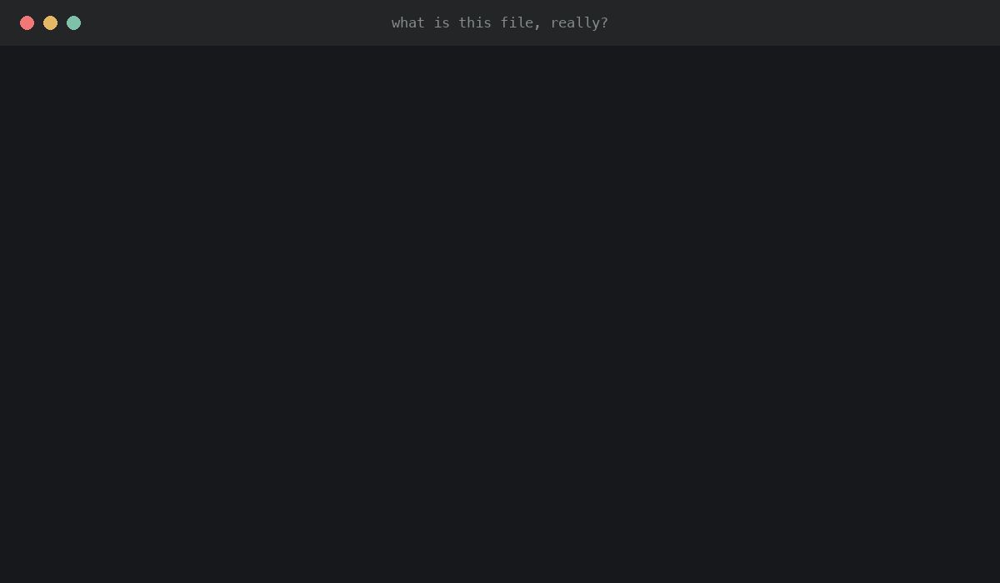
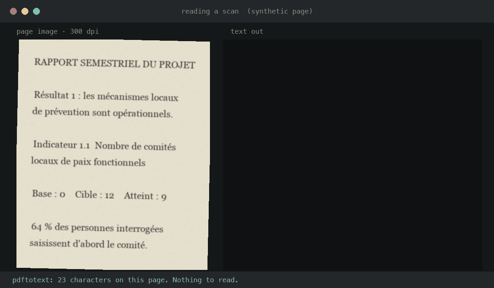
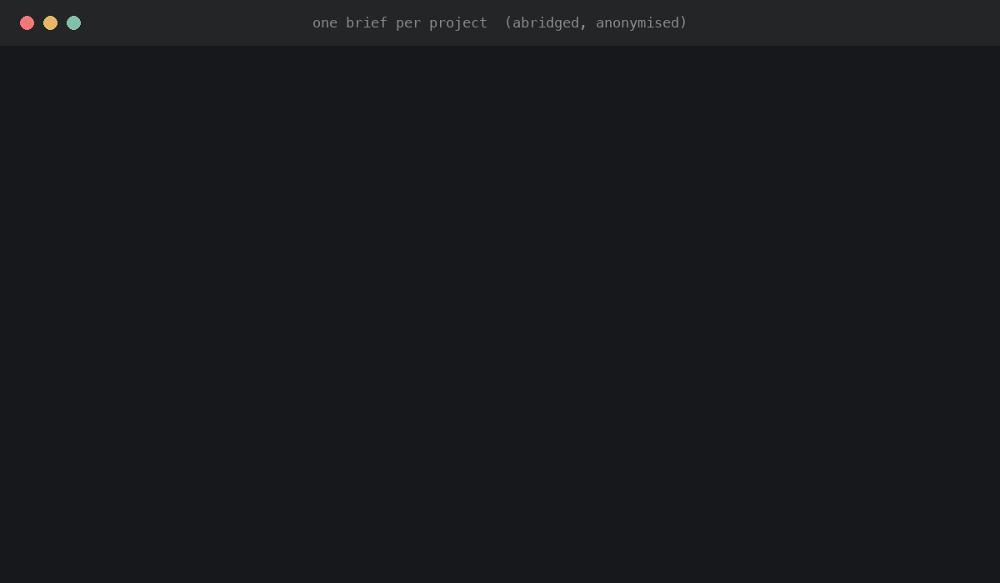
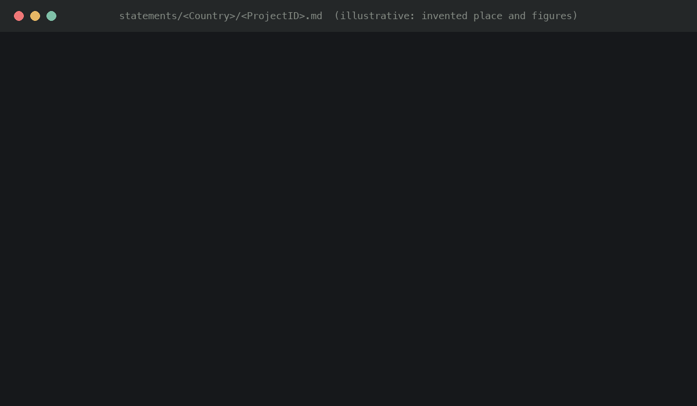
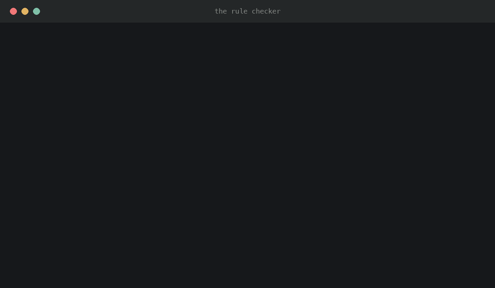
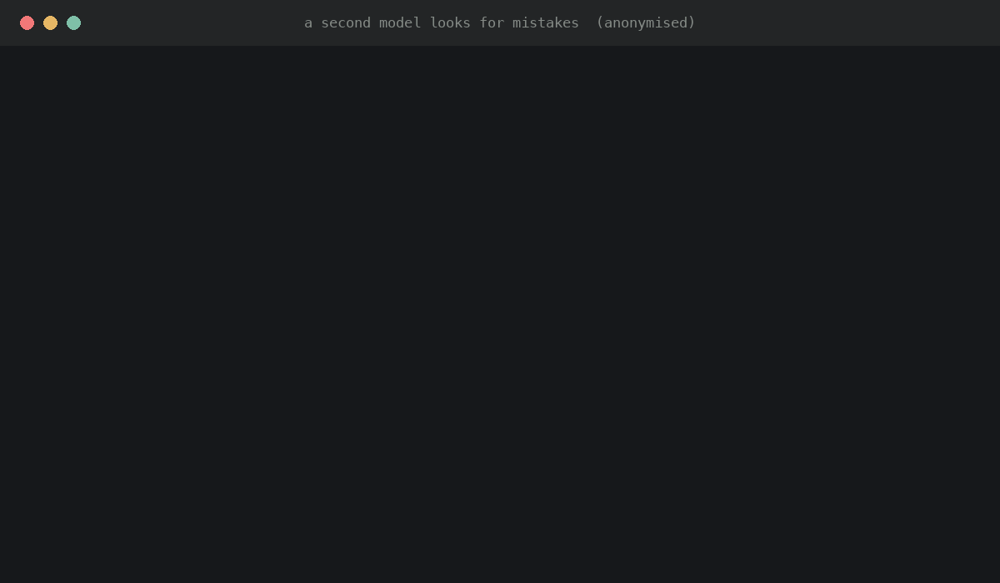
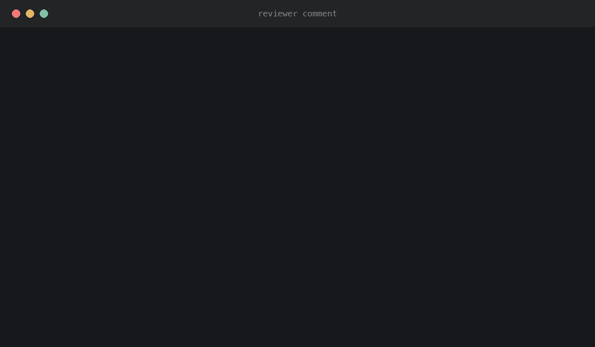

How it was made · UN Peacebuilding Fund impact statements
A walk through how a pile of evaluations, scans and spreadsheets in four languages became short, evidence-backed accounts of what changed, using Python to read and check, a language model to draft, and people to decide.
Scroll, or use ← →. The switch at top right hides the technical detail.
The 30-second version
Code reads. A language model drafts. Code and a second model check. People decide. Nothing reaches a reviewer on the model's say-so alone.
Every file is opened, converted to text and labelled. Scanned pages are read by OCR.
PythonFor one project at a time, the model reads all its sources and writes 120 to 200 words under written house rules.
ModelRules are enforced by code. Numbers and quotes are matched to the sources. A second model hunts for contradictions.
PythonSecond modelThe Impact Hub reads each draft with its sources and flags, then approves, rewrites or sends it back. Their comments become new rules.
PeopleThe rest of this page walks through each step, with short recordings of the tools at work. Recordings use anonymised or invented examples, because the drafts themselves are not public.
1 · The context
The Peacebuilding Impact Data Platform will show, for each Peacebuilding Fund project, a statement of what actually changed. Each one runs 120 to 200 words, covers five required elements, and has to be traceable to a document.
The strength of the evidence decides which of the three a project gets. A weak claim is never stretched into a strong one.
PBSO's Impact Hub owns the method and reviews every draft. A volunteer drafter built and ran the system described here. The model and the code do the reading and first drafting.
Impact evaluations, final project evaluations, the Secretary-General's reports, portfolio and thematic reviews, and final project reports. A project's own progress reports count for less.
An invented number, date, place or quote. Claiming a project caused a change it only contributed to. Stretching thin evidence into a strong claim.
2 · The challenge
Writing 150 words is easy. Writing 150 words where every number is the right number is not, because the sources mislead in ways that look perfectly normal.
A file called …report.pdf turned out to be a budget spreadsheet. Names say nothing reliable about what a document is.
Fix: identify every file by its content, never its name.
Over 100 PDFs were scans with no text in them at all. A few had just enough text to look fine.
Fix: measure characters per page across the whole file, then run OCR.
Some PDFs return 012y4567897y instead of words. Nothing useful can be read from it.
Fix: test whether the text contains real words.
One summary claimed a 50% reduction three times. The results table showed 50% was the target. The real movement was 20 to 18.
Fix: draft from the results table, not the summary.
Cross-border projects are filed once per country. Two copies of one report are not two sources.
Fix: fingerprint every file and spot the twins.
Different documents about the same project can give different figures for one result.
Fix: a fixed order of precedence, and a flag every time.
An evaluation says « 69% (dont 39% de femmes et 30% d'hommes) ». How many of the group are women?
In this corpus dont X% is additive: the parts sum to the total. The reading was confirmed against a table in the same evaluation, then written into the rules and given its own reviewer flag, dont-pct, because it silently changes every gender split in six francophone countries.
3 · Reading the files
No model sees a page until plain code has opened the file, worked out what it really is, and saved its text. This is done once and reused.
A read-only copy of the shared library, never written to.
Check the file's actual format before trusting its extension, then pull the text with the right tool for that format.
Each file's text is cached under the md5 of its path, so nothing is extracted twice.
Cache keys also depend on how the operating system spells accented file names. macOS hands back one Unicode form and a keyboard types another, which gives two different fingerprints for one file. Paths are always taken from the file system, never typed.

151 documents were photographs of pages. Each page is turned into an image and read by OCR in the right language for its country.
OCR text is treated as lower confidence. Any figure taken from it is checked against the page image and carries an ocr flag. Tick-boxes on scanned forms often cannot be recovered, and the rule is to say so, not to guess.
Screening for scans by "zero text" misses files. Nine had a thin text layer, just a print header and page number, with every answer scanned as an image. The screen that works is characters per page across the whole document.

Evaluation, Secretary-General's report, progress report, project document, budget. Decided from the words on the page.
A project with an independent evaluation can support a statement. One with only its own progress reports gets a story. This became the work plan.
Paragraphs from the Secretary-General's reports and the reporting dashboards have been through official clearance. Code finds the ones about each project and records the page.
Spreadsheet columns are read by header name, never by position. Guessing by shape was tried first and picked up the wrong cell as a project title in two workbooks.
Every source in the folder, in order of authority, with the cleared language attached and the known traps for that folder called out.

4 · Drafting with a language model
The house rules live in a file that the model reads before every draft. When the rules change, the file changes, and so does every draft after it.
The drafter was Claude, run as an agent in Claude Code and looped over the queue. The contract is drafting-rules.md, the procedure is DRAFTING-LOOP.md, and each draft is a small Markdown file with front matter, body, sources and a ## Flags block. 329 commits record every change.
The order changed once, on a reviewer's ruling. Press to see it move.
One small text file per project. The statement, the sources it used, and a note to the reviewer about anything uncertain or left out.

This is a judgement made on the documents, following the Impact Hub's method.
5 · Guardrails
A language model reads fast and writes well, but it cannot vouch for its own accuracy. So the work was split by what each party can be trusted with.
When the model is asked to find evidence, it must return sentences verbatim. evidence_digest.py string-matches each one against the source text and silently drops any that do not match, so only text that exists in the source can reach a draft by that route. Checks are never loosened to make a draft pass. If a rule is wrong, the rule file is changed and the change is recorded.

6 · A second opinion
A model checking its own work tends to agree with itself. So a separate model, from a different maker, compared each draft with the full text of its sources and reported anything that did not match.

5 needed a correction and got one. 9 were false alarms: the checker had misread a broken table or compared two different indicators.
So a finding is a lead, not a verdict. Each one is opened against the source before anything is changed.
qa_pass.py ran a GPT model on Azure AI Foundry over 5.7M tokens and writes findings only, never edits. adjudicate.py then pulls the competing figure, in its own sentence, from the full document so a person can rule on evidence.
An old figure where a newer one exists. Interim numbers sit on page 1. Final ones are deep in the document.
A plan reported as a result. “Aims to”, “is expected to” and “reste à être validé” do not mean “did”.
The narrative read in place of the results table. When they disagree, the table is the figure.
A target published as the achievement. Baseline, target and result sit side by side and lose their headers when extracted.
Each pattern went back into the rule file, so later drafts were written knowing about it.
7 · What went wrong
Each problem below was found during the work, fixed, and then turned into a check so it could not quietly come back.
Official report paragraphs were sitting in project folders and are the preferred wording to reuse.
Cause: they are deep inside long reports filed alongside everything else.
Now: sg_language.py extracts it and the brief puts it first.
Interim figures sit on page 1 and final ones deep inside, so the opening pages alone are not enough.
Cause: a speed shortcut in extraction.
Now: counts are searched across the full document, and QA reads full text.
Results frameworks in Word reports live in tables, which the first extractor skipped.
Cause: the extractor read paragraphs only.
Now: rebuilt with tables, and figure_check.py re-tested the affected drafts.
One recent report extracted as gibberish even though it had a text layer.
Cause: a font with no character map.
Now: scrambled.py finds such files and sends them to OCR.
The same kind of document was cited under many different labels, in three languages.
Cause: each source names itself differently.
Now: normalize_citations.py brings every citation to the standard guide, and audit_citations.py matches titles and quotes to the sources.
Every country outside a short French-speaking list was read as English, which would have garbled Spanish and Portuguese scans.
Cause: a map written for the first 31 countries.
Now: a per-country map covering 28 countries in three languages.
A problem fixed by hand can return. A problem turned into a check cannot.
8 · The feedback loop
Comments from the Impact Hub were not applied draft by draft. Each one was turned into a rule, the rule into an automatic check, and the check was then run over everything already written.

Pilot. Five statements, the OCR pipeline and a private review site.
The house style is rewritten.
Headings lose their fixed template. National actors become the subject. Always look for cleared report language first.
The library grows from 133 to 388 projects. Merged, not replaced, and OCR extended to Spanish and Portuguese.
14 drafts come back with suggested rewrites and detailed comments.
Describe the change, not the activity. Headline the whole project, not one part. Cite to the standard guide. Shorter sentences.
The order of authority between sources is refined. All 299 existing drafts were audited against the new order. None needed rewriting.
All 435 drafts complete and handed over.
9 · Flags
Reviewers asked, more than once, for the system to highlight what it was unsure of. So each draft carries flags from an agreed list of sixteen. They are notes for the reviewer.
negativeself-reportedinconsistencysg-checkunverified-pctsource-notetranslationdont-pctocrcheckboxunreadablemissing-sourcecross-filedreport-typeshort-codespellingunreadable and spelling were added on a reviewer's ruling in November. The list lives in drafting-rules.md and in verify.py, which rejects any flag not on it and requires a flag about a conflict to name the document the conflict sits in.
10 · Collecting the feedback
Reviewing 435 drafts in a Word file is slow. So the drafts were also published as a small private website where reviewers can search, filter by country on a map, read each draft beside its sources and flags, and record a verdict.
Typed by the reviewer. Sent separately from the link. Never leaves the browser.
The browser turns it into an encryption key, slowly on purpose, so guessing is impractical.
The page downloads one encrypted file and unlocks it locally.
Verdicts and comments save as the reviewer goes and come back as a file or a submission.
Hosted on GitHub Pages, which only serves public repositories on a free account. So the repository holds ciphertext only: AES-256-GCM, with the key derived by PBKDF2-SHA256 at 600,000 iterations and a random salt, all through the browser's Web Crypto API. Map outlines are baked into the encrypted file at build time, so the page fetches nothing else and works behind a firewall. build_review_site.py regenerates it and can rotate the key.
11 · What came out
Each draft carries its results, the sources they rest on, and a note to the reviewer about anything uncertain.
Number of drafts carrying each flag.
All drafts in the reviewers' order, with and without flags.
Search, filter by country on a map, read the sources, record a verdict on each draft.
Overview, evidence and stories pages, generated entirely from code.
12 · The effort
Every change to a draft, a rule or a tool was saved with a note saying why. The record shows short bursts of drafting separated by waits for feedback, which is how the loop is meant to run.
August: pilot. Early September: rules rewritten after round one and drafting at scale. November: round-two rewrites, the QA pass, and the last projects.
Git history doubles as the audit trail. A reviewer asking why a draft uses one figure and not another can be answered from the commit that changed it and the flag that explains it.
Questions people ask
It wrote the drafts. The method, the house style and every ruling came from PBSO's Impact Hub, and every draft goes to them marked as a draft, with its sources and its doubts attached. Nothing is published on the model's authority.
Any language model can, which is why no claim rests on the model alone. Quotes and titles are matched to the source text by code, numbers are looked up in the project's documents, a second model searches for contradictions, and a person opens the source before anything is changed.
A model reviewing its own draft shares its own blind spots. A model from a different maker, given the full source text and asked only to find contradictions, disagrees more usefully. It is also wrong often, which is why its findings are checked and never applied automatically.
There is a fixed order of authority. Independent evaluations come first and a project's own reporting comes last. Where the order does not settle it, neither figure is used and the reviewer gets a flag naming both documents.
Most of it. The reading pipeline, the checks and the review site are general. What is specific to this fund is the rule file, the list of flags and the order of authority between sources, and those are plain text files meant to be edited.
What we would tell the next team
The stack: Python 3 (29 scripts, about 6,000 lines) · poppler (pdftotext, pdftoppm) · Tesseract OCR · Claude via Claude Code for drafting · a GPT model on Azure AI Foundry for independent QA · Git · GitHub Pages with Web Crypto · Power BI with Deneb.